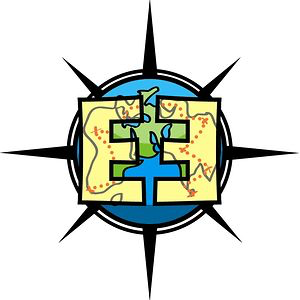

Outreach
Experience
Coordinator
Assistant
Instructor
Outreach Instructor
-

The iSchool Inclusion Institute (i3)
i3 Teaching Fellow Summer 2018
The iSchool Inclusion Institute (i3) is an undergraduate research and leadership development program that prepares students from underrepresented populations for graduate study and careers in the information sciences. i3 Teaching Fellows will co-teach a two-week module to the 2018 cohort of i3 Scholars. Two Teaching Fellows are selected to co-teach a two-week Programming Module, introducing students to the basics of Python. Teaching Fellows will be responsible for developing and delivering the daily, in-class content of their respective modules.
-

Summer SuperSTEM
Instructor Summer 2015
Summer SuperSTEM is a summer program hosted by the Innovation Center, a maker space for the students in St. Vrain Valley School District.
Summer SuperSTEM 3-D Printing Toy Design (intermediate level/grades 3-5)
Learn about the craft of toy design and manufacturing through 3-D printing. You will learn how to make 3D designs in print and with Google Sketchup, then print original toy designs on a 3D printer. What you design and make is limited only by your imagination!
Summer SuperSTEM Python Level 1 (high school level)
Learn the basics of Python, a common and accessible programming language. If you are new to programming, this is a great class for you. -
GK-12 Fellow
National Science Foundation: Graduate Research GK-12 Fellow 2013 – 2015
The ECSITE Project: Engaging Computer Science in Traditional Education
This project incorporated computing into existing K-12 courses by working with local school districts to develop standard-based curriculum appropriate for each individual school.
Outreach Coordinator
-

T9Hacks
Founder, Director, Advisor 2015 – 2019
T9Hacks is a women's hackathon promoting gender diversity in creative technology. The hackathon creates opportunity for women to explore new technologies, solve real-world problems, and create something amazing with a team.
News
- T9 Hacks gathers women, non-binary people at CU Boulder for 24-hour hackathon
- Community Roundup: Hackathons Empowering Safety, Security, and Diversity
- T9Hacks continues to grow and thrive
- Female-focused, collaborative hackathon session slated for Feb. 10
- CU-Boulder's Atlas Institute hosts inaugural women-centric hack-a-thon
- T9Hacks brings women together for 24 hours of hacking
- T9 Hacks Highlights
- T9Hacks: Supporting Diversity in Tech
- CU ATLAS T9Hacks: Bridging the Gap Between Women & Tech
Outreach Assistant
-

Science Discovery Summer Camp
Teaching Assistant Summers 2013–2015
CU Science Discovery offers a variety of hands-on STEM (science, technology, engineering and math) camps for kids ages 5-18. Science Discovery offers intensive 1-3 week summer workshops for high school students. Workshops provide unique opportunities for older students to work in CU laboratories, interact with CU scientists, and explore STEM careers.
-

Earth Explorers
Board Member, Evaluation Lead, Senior Volunteer, Mentor 2013–2015
Earth Explorers is an independent nonprofit that partners with local schools and research institutions to provide Science, Technology, Engineering and Math (STEM) curriculum with education in filmmaking to spark a lifelong interest in STEM topics.
-

Digital CUrrents
Teaching Assistant Summer 2014
Digital CUrrents (once ATLAS-Campos EPC Summer STEM Program) is a three-week technology intensive summer workshop for high school students who are largely from underrepresented minority groups. Students learn to use software applications and gain programming skills to create and manipulate digital content and complete a final project that showcases their creative and technical talents. Workshop participants also visit with guest speakers about career opportunities in technology-related fields and enjoy field trips to local technology-focused businesses.